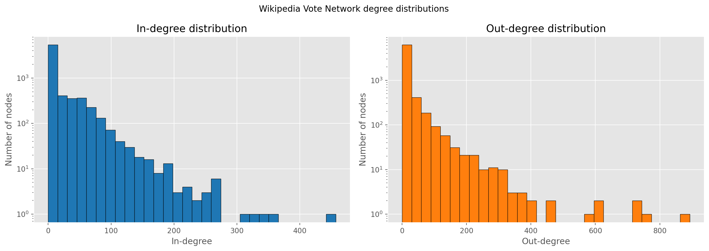
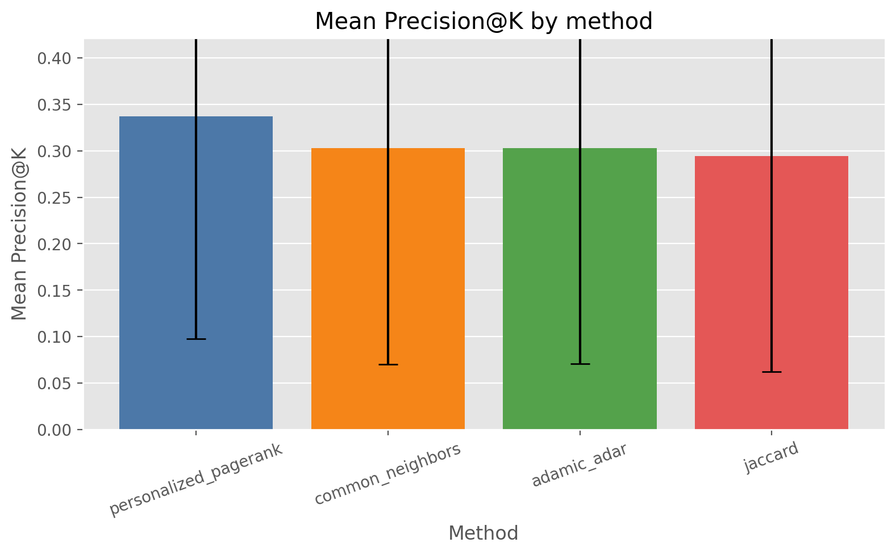
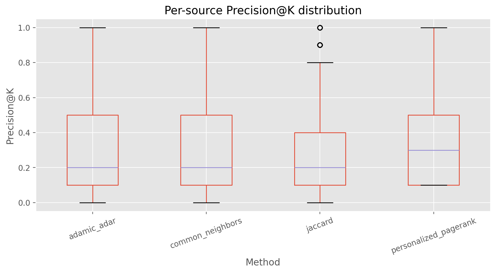
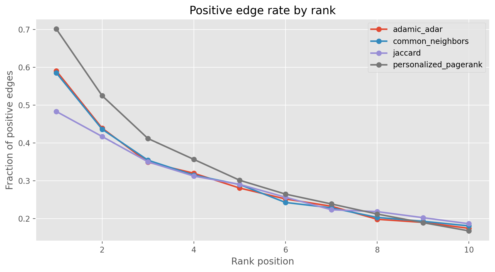

Why This Project?
LLMs Hallucinate
When a language model lacks specific context, it generates confident but wrong answers. RAG fixes this by retrieving relevant documents first.
Keyword RAG Fails Indirectly
"How is Professor A influenced by Scientist B?" — keyword search fails if they never co-authored. The relationship exists only as a multi-hop graph path.
GraphRAG Finds Hidden Paths
By structuring knowledge as a graph, we trace A → C → B through intermediate nodes — surfacing context that flat retrieval misses entirely.
Our Approach
If algorithm predicts a strong link from user A to user B, then B is treated as relevant context for A. Link prediction = context retrieval.
Dataset — Wikipedia Vote Network
Each directed edge i → j means Wikipedia user i voted to promote user j to administrator — a signal of trust and relevance. Downloaded from the Stanford Network Analysis Project (SNAP).
Pipeline — 5 Stages
Download
Fetch compressed dataset from SNAP
download_data.py
Preprocess
Remove self-loops & duplicates → CSV
preprocess_data.py
Split
80/20 train/test + 10× negative sampling
create_split.py
Score & Rank
4 algorithms score 228K candidates, Top-10 per node
run_experiments.py
Evaluate
Precision@10 per method across 2,807 nodes
evaluate.py
Algorithms
Common Neighbors
Count how many users both u and v are connected to. More shared connections → more likely to be related.
Jaccard Coefficient
Normalises common neighbours by total neighbourhood size. Penalises high-degree hub nodes.
Adamic / Adar
w ∈ N(u) ∩ N(v)
Like Common Neighbors but niche shared neighbours (low degree) count more than popular hubs.
Personalized PageRank
α = 0.85, restart at u
Random walker starts at u, follows directed edges, teleports back to u. Reaches nodes 2–3 hops away that local methods miss.
Results — Precision@10
Method Comparison
| Method | Mean P@10 | Std Dev | Total Hits | vs Random |
|---|---|---|---|---|
| Personalized PageRank | 0.3369 | 0.2389 | 9,456 | 3.7× |
| Common Neighbors | 0.2328 | 8,502 | 3.3× | |
| Adamic / Adar | 0.2320 | 8,496 | 3.3× | |
| Jaccard | 0.2320 | 8,254 | 3.2× | |
| Random (baseline) | — | — | 1.0× |
Evaluated over 2,807 source nodes · Top-K = 10
Mean Precision@10 by Method
Analysis Figures




Key Takeaways
PageRank Wins (+11%)
Multi-hop directed paths find indirect connections that local methods miss. The Wikipedia hub-and-spoke structure amplifies this advantage.
Jaccard Penalises Hubs — Wrong Choice
Normalising by union size discounts high-degree admins. But in this network, those hubs ARE the meaningful connectors. Jaccard scores lowest.
CN ≈ Adamic/Adar
The log-weighting in Adamic/Adar barely changes rankings because most shared neighbours are already medium-degree in this heavy-tailed graph.
3.7× Better Than Random
All graph methods beat the 9.1% random baseline by 3–4×, confirming that graph structure carries real information for context relevance.
GraphRAG Justified
PPR's 33.7% precision means a GraphRAG engine provides 3–4 genuinely relevant context nodes per 10-node window — vs. ~1 for a random retriever.
Next Steps
Ensemble all 4 scores, add Recall@K / AUC-ROC, try a temporal split, or upgrade to a GNN-based predictor (GraphSAGE, GAT).